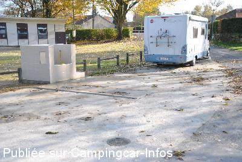
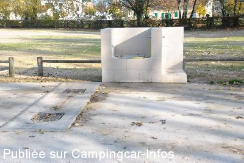
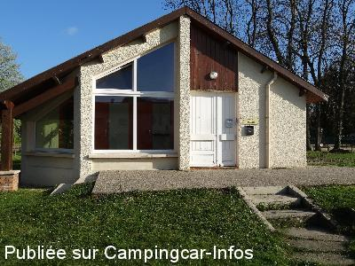
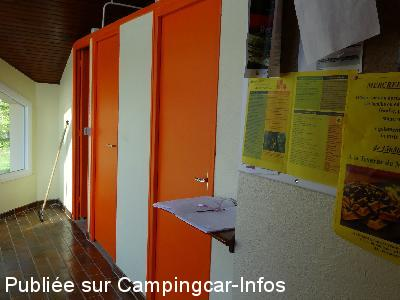
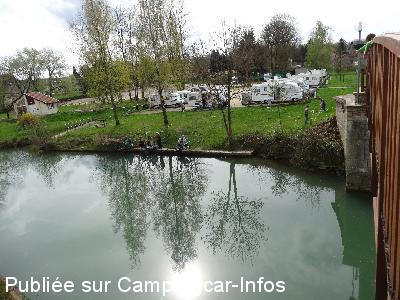
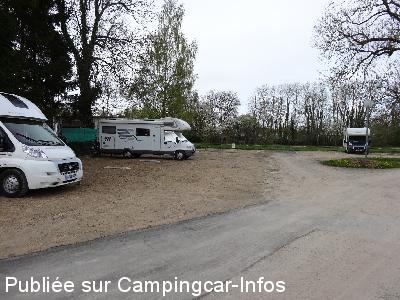

ASN = Aire de services avec stationnement nuit possible de :
STENAY
(N° 180)
Accès/adresse :
Avenue du 18 ème BCP
55700 STENAY
55700 STENAY
Latitude : (Nord) 49.4899° Décimaux ou 49° 29′ 23′′
Longitude : (Est) 5.18329° Décimaux ou 5° 10′ 59′′
Tarif : 2016
Stationnement, services, électricité, douche, wifi : 8 à 9 €
Remorque : 1 €
Douche : 2 €
Lave-linge : 4 €
Services C-C de passage : 2 €
Type de borne : Autre
Services :


Accès handicapés
Tous commerces
Autres informations :
Ouvert toute l'année
55 emplacements
Tel : +33(0)329 806 422
info@tourisme-stenay.com
http://www.tourisme-stenay.com/infos-pratiques/l-aire-de-services-de-camping-cars
Se présenter à l'Office de Tourisme pour payer et avoir le code de la barrière
Office Tourisme du Pays de Stenay
Ouvert de 10h à 12h et 14h à 17h
5 Place Raymond Poincaré

Le 06/01/2016 par Philou1310

Le 06/01/2016 par Philou1310

Le 09/04/2014 par georget

Le 09/04/2014 par georget

Le 09/04/2014 par georget

Le 09/04/2014 par georget
de
jean et rose68
le 19/03/2016 :
venons de passer la nuit a stenay , 9 euros pour tout ça , c assez rare , mais c super et la dame qui vient encaisser est très sympa , merci la commune
venons de passer la nuit a stenay , 9 euros pour tout ça , c assez rare , mais c super et la dame qui vient encaisser est très sympa , merci la commune
de
Philou 1310
le 06/01/2016 :
Bonjour, nous y sommes allés au mois de novembre 2015, le parking a été remis en état et les emplacements sont délimités. Aire bien sympa.
Petit resto en face de la brasserie, 5 minutes à pieds.
Bonjour, nous y sommes allés au mois de novembre 2015, le parking a été remis en état et les emplacements sont délimités. Aire bien sympa.
Petit resto en face de la brasserie, 5 minutes à pieds.
de
dany44
le 13/08/2015 :
Dormi le 22/7/15. Aire très bien placée et calme bien conçue 8€ avec service et wifi. Cette aire possède désormais les services très bien faits. Visiblement l'aire en face N°19279 ne doit plus posséder les services mais garde un stationnement de quelques places beaucoup moins calmes que celle-ci. Pour entrer, il faut aller à la capitainerie juste en face sur l'autre rive, régler et obtenir le code d'accès. Toujours des réducs et avantages avec le droit d'entrée notamment une entrée gratuite au très bon musée de la bière.
Dormi le 22/7/15. Aire très bien placée et calme bien conçue 8€ avec service et wifi. Cette aire possède désormais les services très bien faits. Visiblement l'aire en face N°19279 ne doit plus posséder les services mais garde un stationnement de quelques places beaucoup moins calmes que celle-ci. Pour entrer, il faut aller à la capitainerie juste en face sur l'autre rive, régler et obtenir le code d'accès. Toujours des réducs et avantages avec le droit d'entrée notamment une entrée gratuite au très bon musée de la bière.
de
jocelyne80
le 18/05/2015 :
Nous n'avons pas aimé nous en sommes repartis au bout d'une heure pour aller au lac de Madine.Les CC sont garés n'importe comment le sol n'est pas stabilise nids de poule et l'aire est entourée d'un rideau de grands arbres impression d'etouffement
Nous n'avons pas aimé nous en sommes repartis au bout d'une heure pour aller au lac de Madine.Les CC sont garés n'importe comment le sol n'est pas stabilise nids de poule et l'aire est entourée d'un rideau de grands arbres impression d'etouffement
de
Jean-Yves & Colette (Belgique)
le 02/09/2014 :
§ Bonjour à tous, nous sommes à STENAY pour quelques jours nous avons appris de la part de l'employée de la capitainerie avec document à l'appui que de nouveaux tarifs seront appliqués à partir du mois de novembre 2014. En voici le détail, de novembre 2014 à mars 2015, le prix sera de 10 euros la nuitée et d'avril à octobre 2015, le prix sera de 9 euros la nuitée. Le prix de la nuitée est pris en compte à partir de 14 h 00 le jour d'arrivée jusqu'au lendemain à 14 h OO. Cette augmentation est justifiée suite à la hausse des prix de l'électricité et de l'eau). Accueil toujours aussi sympa et bon gratuit pour la visite du Musée de la bière.
§ Bonjour à tous, nous sommes à STENAY pour quelques jours nous avons appris de la part de l'employée de la capitainerie avec document à l'appui que de nouveaux tarifs seront appliqués à partir du mois de novembre 2014. En voici le détail, de novembre 2014 à mars 2015, le prix sera de 10 euros la nuitée et d'avril à octobre 2015, le prix sera de 9 euros la nuitée. Le prix de la nuitée est pris en compte à partir de 14 h 00 le jour d'arrivée jusqu'au lendemain à 14 h OO. Cette augmentation est justifiée suite à la hausse des prix de l'électricité et de l'eau). Accueil toujours aussi sympa et bon gratuit pour la visite du Musée de la bière.
de
Mataf59
le 06/07/2014 :
Aire souvent surchargée........ Dommage qu'il faille se déplacer au port pour faire les services. Mais le site est agréable.
Aire souvent surchargée........ Dommage qu'il faille se déplacer au port pour faire les services. Mais le site est agréable.
de
RSKRandonneur62
le 12/04/2014 :
J'y suis passé une nouvelle fois cette semaine, je rajouterai simplement qu'avec l'inscription on vous offre une entrée gratuite pour visiter le musée de la bière.
N'hésitez surtout pas ce musée vaut vraiment le détour.
C'est un grand musée avec d'innombrables témoignages machines et objets sur la bière et le rôle des brasseries.Personnel très avenant.
Voyager c'est visiter pour apprendre à connaitre
J'y suis passé une nouvelle fois cette semaine, je rajouterai simplement qu'avec l'inscription on vous offre une entrée gratuite pour visiter le musée de la bière.
N'hésitez surtout pas ce musée vaut vraiment le détour.
C'est un grand musée avec d'innombrables témoignages machines et objets sur la bière et le rôle des brasseries.Personnel très avenant.
Voyager c'est visiter pour apprendre à connaitre
de
georget
le 09/04/2014 :
Les photos représentent; Le bloc sanitaire avec ses deux lavabos, deux wc et trois douches, dont l'une est prévue pour handicapé. La vue sur le terrain et sa possibilité de pêcher (avec permis)et le côtés gauche de l'entrée du terrain. Les vidanges et remplissage se font de l'autre côtés de la Meuse (à cent mètres) à la capitainerie.
Les photos représentent; Le bloc sanitaire avec ses deux lavabos, deux wc et trois douches, dont l'une est prévue pour handicapé. La vue sur le terrain et sa possibilité de pêcher (avec permis)et le côtés gauche de l'entrée du terrain. Les vidanges et remplissage se font de l'autre côtés de la Meuse (à cent mètres) à la capitainerie.
de
georget
le 08/04/2014 :
Nous sommes actuellement sur le terrain depuis le 06-04-2014 et c'est tout simplement génial. Aucun reproche a faire. Superbe accueil. Pour 8€ vous avez tout et la cerise sur le gâteau, ils vous offre un wifi qui pour certain sera bien plus rapide que chez eux. Un wifi rapide qui couvre tout le camp, c'est rare. Merci à tous et merci au gestionnaires de la ville. Nous reviendrons, c'est sur....
Nous sommes actuellement sur le terrain depuis le 06-04-2014 et c'est tout simplement génial. Aucun reproche a faire. Superbe accueil. Pour 8€ vous avez tout et la cerise sur le gâteau, ils vous offre un wifi qui pour certain sera bien plus rapide que chez eux. Un wifi rapide qui couvre tout le camp, c'est rare. Merci à tous et merci au gestionnaires de la ville. Nous reviendrons, c'est sur....
de
cocotiti02
le 05/04/2014 :
Stationnés sur cette aire le week-end dernier. Les douches au top, le personnel de l'office de tourisme très sympa et prévenant envers nous, que du bonheur et une ambiance agréable et en plus avec nos amis belges venus très nombreux.
Stationnés sur cette aire le week-end dernier. Les douches au top, le personnel de l'office de tourisme très sympa et prévenant envers nous, que du bonheur et une ambiance agréable et en plus avec nos amis belges venus très nombreux.
de
postel
le 01/04/2014 :
§ Bravo nous sommes sur l'aire service de STENAY,
je confirme 8€ pour l'électricité, wifi, douche avec eau chaude
d'une propriété,
bravo très agréables,
merci pour l'accueil
§ Bravo nous sommes sur l'aire service de STENAY,
je confirme 8€ pour l'électricité, wifi, douche avec eau chaude
d'une propriété,
bravo très agréables,
merci pour l'accueil
de
Nath § Did
le 27/11/2013 :
§ Nous avons séjourné sur cette aire ce vendredi 22 nov 2013 et y avons passés 1 nuit. Pour 8 euros nous avons eu tous les services, Wi-Fi et elec compris. Accès aux douches et wc compris dans le prix. Emplacement calme et agréable au bord du canal et près du centre du village. Bon accueil à l'office du tourisme. Nous y retournerons avec plaisir.
§ Nous avons séjourné sur cette aire ce vendredi 22 nov 2013 et y avons passés 1 nuit. Pour 8 euros nous avons eu tous les services, Wi-Fi et elec compris. Accès aux douches et wc compris dans le prix. Emplacement calme et agréable au bord du canal et près du centre du village. Bon accueil à l'office du tourisme. Nous y retournerons avec plaisir.
de
papyli
le 21/09/2013 :
Aire agréable pour ceux qui aiment le stationnement en sardines. 8 € stationnement et service compris (prix 2013). Dommage : pas d'électricité pour l'extension côté terrain de boules (même tarif 8 € sans électricité), pas de possibilité de vidanger la cassette WC sur place. les services sont de l'autre côté du port et oblige à passer le pont pour s'y rendre, possibilité de douche, WC, machine à laver (jetons) sur place. wifi gratuit.
Aire agréable pour ceux qui aiment le stationnement en sardines. 8 € stationnement et service compris (prix 2013). Dommage : pas d'électricité pour l'extension côté terrain de boules (même tarif 8 € sans électricité), pas de possibilité de vidanger la cassette WC sur place. les services sont de l'autre côté du port et oblige à passer le pont pour s'y rendre, possibilité de douche, WC, machine à laver (jetons) sur place. wifi gratuit.
de
lengagne
le 15/12/2012 :
§ aire trés agréable surtout prés du port ( vidanges , eau, électricité, douche, lave linge), bon accueil , wifi port ( 3 euros par 24h ou 16 euros pour un an ) wifi peut être gratuite prochainement
§ aire trés agréable surtout prés du port ( vidanges , eau, électricité, douche, lave linge), bon accueil , wifi port ( 3 euros par 24h ou 16 euros pour un an ) wifi peut être gratuite prochainement
de
MICO
le 17/08/2009 :
En visite dans la Meuse, je ne peux que confirmer les écrits de Jean. Bravo à la Municipalité qui a su trouver la bonne formule pour les services et le stationnement.
Les sanitaires et douches propres, et dire qu'il y a encore des mécontents (vu sur le livre d'or), la gratuité a bien un prix, si ce n'est pour l'accueilli, c'est pour l'accueillant.
Je réitére mes félicitations, cette commune mérite le titre "d'aire de l'année".
En visite dans la Meuse, je ne peux que confirmer les écrits de Jean. Bravo à la Municipalité qui a su trouver la bonne formule pour les services et le stationnement.
Les sanitaires et douches propres, et dire qu'il y a encore des mécontents (vu sur le livre d'or), la gratuité a bien un prix, si ce n'est pour l'accueilli, c'est pour l'accueillant.
Je réitére mes félicitations, cette commune mérite le titre "d'aire de l'année".